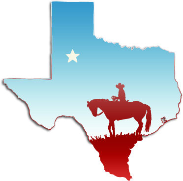

Ben Hernandez
Howdy! My name is Ben Hernandez and I proudly hail from the great state of Texas; pretty much born and raised. I was born in a tiny town on the Louisanna/Texas border called Groves. When I was six weeks old, my dad got a job in Pennsylvania and we moved up there. Eight years later, my parents were homesick for our great state and we moved back. I lived in Texas all the way until I moved to Denver 6 months ago. Denver was our family's goto vacation spot when I was a kid so when I finally got the guts to move away, I choose Denver.
Past Life

- Graduated from the University of Texas at San Antonio
(BS in Math)
- High School Math Teacher (8 years)
My GIFs
The first one represents how I felt going through some of these prework tutorials. Her face pretty much perfectly matches mine going through the web tutorials and not having access to my auto-complete. It felt like coding in the 90s.

This other image represents how I think this program is going to feel sometimes. I am about to spend six months working with stuff I am unfamiliar with and I am going to fall and fail but the end is still going to be epic :)